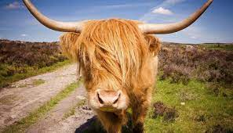
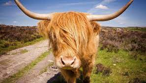

The Highland (Scottish Gaelic: Bò Ghàidhealach; Scots: Hielan coo) is a Scottish breed of rustic beef cattle. It originated in the Scottish Highlands and the Western Islands of Scotland and has long horns and a long shaggy coat. It is a hardy breed, able to withstand the intemperate conditions in the region. The first herd-book dates from 1885; two types – a smaller island type, usually black, and a larger mainland type, usually dun – were registered as a single breed. It is reared primarily for beef, and has been exported to several other countries.